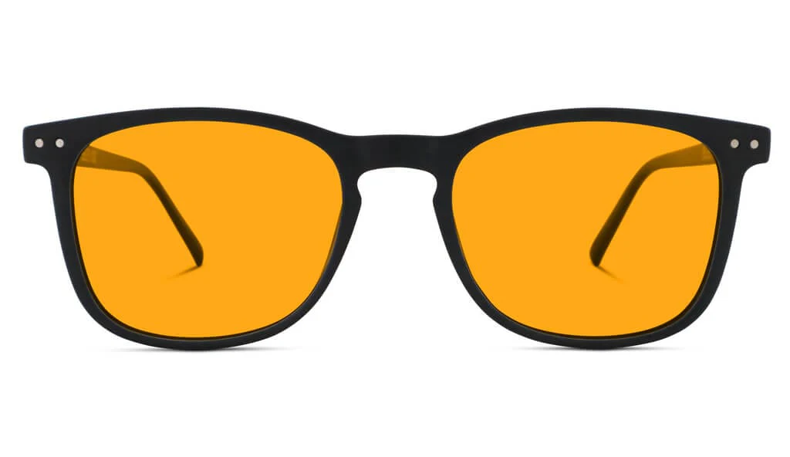

Top 4 Productivity Accessories Every Developer Should Own in 2025
Published on July 13, 2025

- ✅ Ergonomic design reduces wrist strain.
- ✅ Customizable buttons boost workflow speed.
- ✅ Silent MagSpeed scroll wheel for precision scrolling.
- ✅ Long-lasting battery life (up to 70 days).
- ✅ Seamlessly switch between 3 devices.
| Specification | Details |
|---|
| Sensor | Darkfield High Precision |
| DPI Range | 200–4000 DPI |
| Connectivity | Bluetooth, USB Receiver |
| Battery Life | Up to 70 days |
| OS Compatibility | Windows, macOS, Linux |

- ✅ Compact 65% layout for minimal desk space.
- ✅ Wireless Bluetooth or USB-C wired modes.
- ✅ Hot-swappable switches for customization.
- ✅ RGB backlighting for night-time typing.
- ✅ Mac & Windows support out of the box.
| Specification | Details |
|---|
| Layout | 65% |
| Connectivity | Bluetooth 5.1 / USB-C Wired |
| Battery | 4000mAh (up to 240 hours without backlight) |
| Backlight | RGB LED |
| Switch Type | Hot-swappable Gateron (Red/Brown/Blue) |

- ✅ Filters blue light to reduce eye strain.
- ✅ Great for late-night coding sessions.
- ✅ Lightweight and comfortable design.
- ✅ Reduces glare from monitors and screens.
| Specification | Details |
|---|
| Lens Type | Anti-reflective, blue light filter |
| Frame Material | Plastic/Acetate |
| Weight | Approx. 20g |
| Style | Unisex / Rectangular |
| Coating | Scratch-resistant |

- ✅ Adds HDMI, USB-A, SD/microSD, and Ethernet ports.
- ✅ Sleek aluminum body matches MacBooks and ultrabooks.
- ✅ Plug-and-play convenience for home/office setups.
- ✅ Works with most USB-C laptops and tablets.
| Specification | Details |
|---|
| Ports | HDMI, 3x USB-A, USB-C PD, Ethernet, SD, microSD |
| Video Output | 4K @ 30Hz (HDMI) |
| Material | Aluminum Alloy |
| Power Delivery | Up to 100W |
| Compatibility | macOS, Windows, ChromeOS |